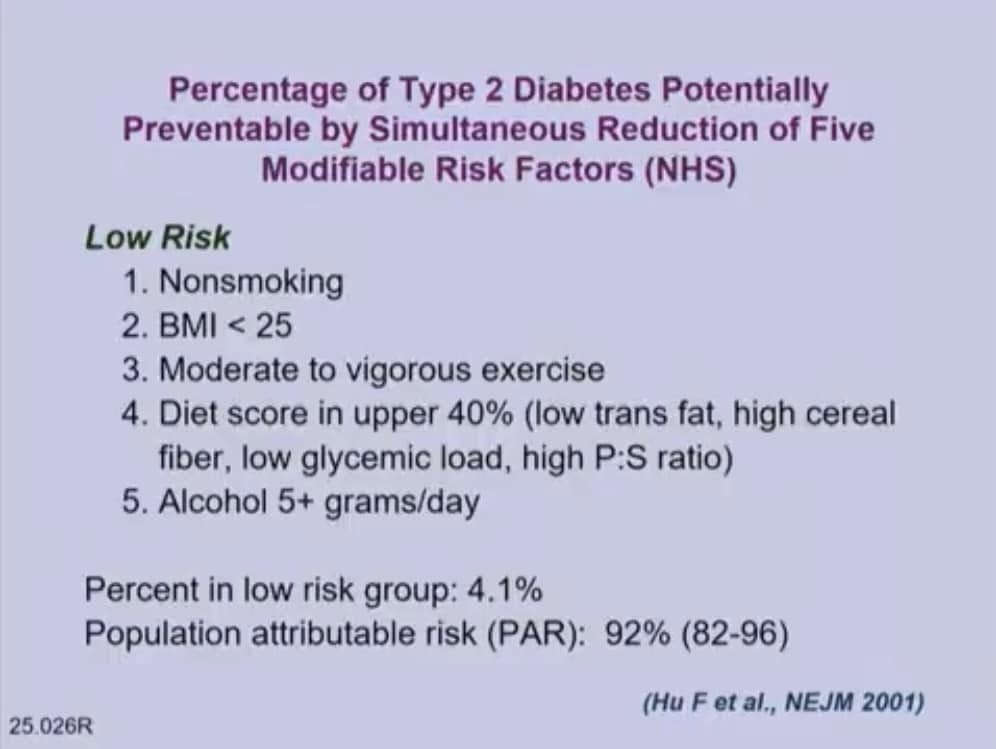

(no text — see the shared post below)
5 lifestyle factors reduced risk of heart disease by 82% and risk of diabetes by 90% in the famous Harvard Nurses Study.
The followup period was about 14 years.
These risk reductions are considerably larger than what is currently achievable by even the best available medications. (However, the Harvard Nurses Study is a prospective cohort study and not an RCT. It cannot firmly establish causation like an RCT can.)
As easy as these look at first glance, only about 3-4% of the tens of thousands of nurses in the study actually achieved all 5 of them.
Notes:
The p/s ratio is polyunsaturated fat intake divided by saturated fat intake.
5g of alcohol is about 1/3 of a standard serving, e.g. 1/3 of a glass of red wine.
See minute 6:15 of this presentation video:
 ▶Video · YouTube · The Real Truth About HealthWhich Diet And Lifestyle Reduces Major Diseases Between 80-90%? - By Author Walter WilletWhich Diet And Lifestyle Reduces Major Diseases Between 80-90%? - By Author Walter Willet Dr. Willett has published over 1,700 original research papers and reviews, primarily on lifestyle risk factors for heart disease, cancer, and other conditions and has written the textbook, Nutritional Epidemiology, published by Oxford University Press, now in its third…youtu.be
▶Video · YouTube · The Real Truth About HealthWhich Diet And Lifestyle Reduces Major Diseases Between 80-90%? - By Author Walter WilletWhich Diet And Lifestyle Reduces Major Diseases Between 80-90%? - By Author Walter Willet Dr. Willett has published over 1,700 original research papers and reviews, primarily on lifestyle risk factors for heart disease, cancer, and other conditions and has written the textbook, Nutritional Epidemiology, published by Oxford University Press, now in its third…youtu.be
#riskfactorsHD #hnsHD #harvardHD #cvdHD #diabetesHD #alcoholHD #omega6HD #omega3HD #saturatedfatHD #exerciseHD #smokingHD #bmiHD #seedoilsHD #omega6diabetesHD #omega6cvdHD

